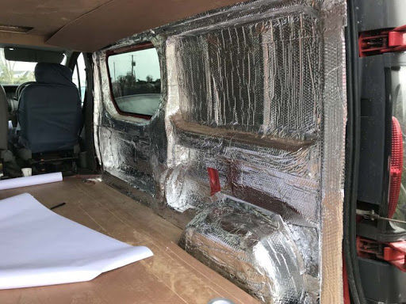

THE BEST WAY OF INSULATION
If you want to keep your van as warm as possible throughout the winter, you will want to address all three types of heat transfer: radiation, conduction and convection. If you are unfamiliar with these terms, read our post on the three types of heat transfer. When building out your van, you want to resist heat conduction by insulating the ceiling, walls and floor with materials that have a high R-value.
Condensation is a big factor for vandwelling. Any case where the warm interior air touches a surface that is colder, moisture from the air will become a liquid. A prime example of this is moisture that builds up on the inside of windows when sitting in cold weather. There is an ongoing debate among vandwellers on whether it makes sense to seal off walls with a watertight material before adding insulation. If moisture is allowed to build up within the walls of a van you may end up with mold or rust.